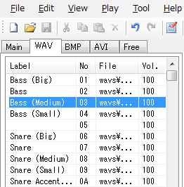

| Advanced operations |
|---|
| Lane associations |
You can associate frequency-used chip to each lanes. Once you associate some chip to the lane, the associated chip is always used to put to the lane, whatever you're using another chip.
You can associate two chips to each lane...... for the "front" channel and the "back" channel.
(1) Go to the edit mode. ( )
)
(2) Select the chip you'd like to associate.

(3) Left-click near the lane name to associate the chip. (If you want to associate to the back channel, do left-click with pressing [Ctrl].)
(1) Go to the edit mode. ( )
)
(2) Right-click near the lane name to cancel association. (If you want to cancel the back channel association, do right-click with pressing [Ctrl].)